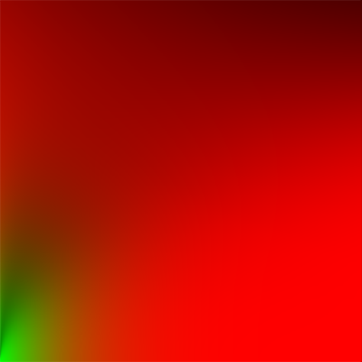
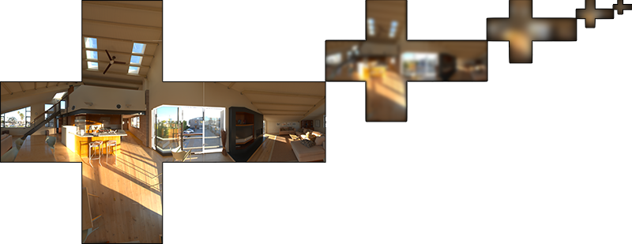
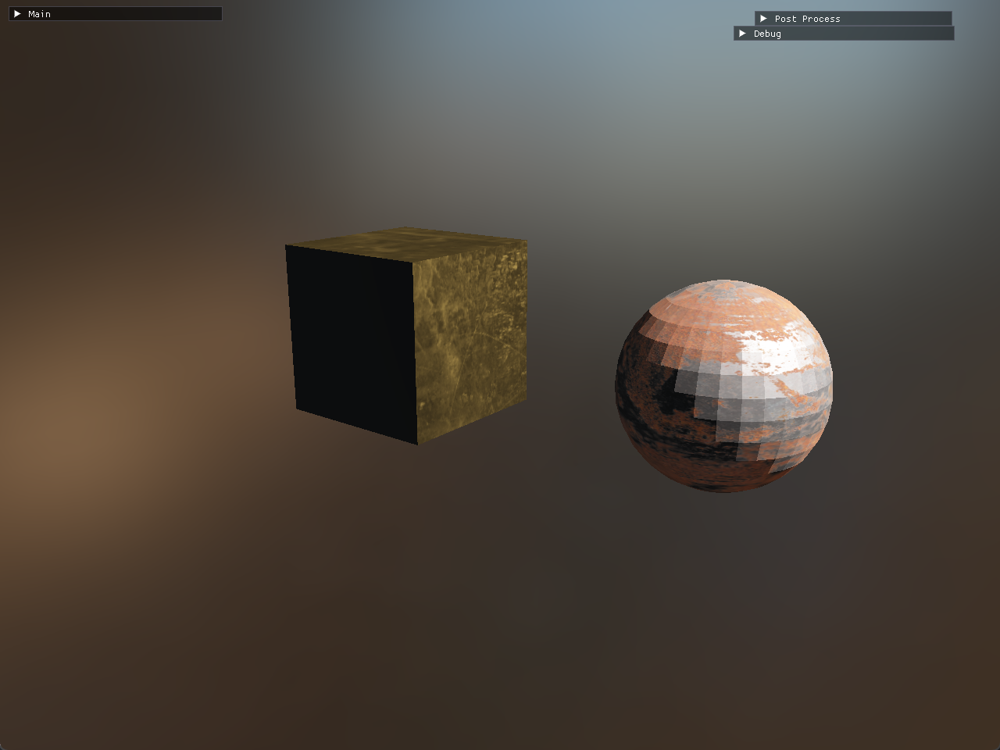

前言
上一篇文章 介绍了IBL的漫反射部分，接下来这篇文章关注的是镜面反射的部分，也就是拆分方程的后面部分。
分割求和近似法
我们回到反射方程的镜面反射部分：
$$L_o(p, \omega_o) = \int_{\Omega} \left(\frac{k_s DFG}{4(\omega_o \cdot \mathbf{n})(\omega_i \cdot \mathbf{n})}\right) L_i(p, \omega_i) \mathbf{n} \cdot \omega_i , d\omega_i$$
我们发现这个积分的结果在积分上不是常数，他受入射光和观察视角两个因素影响。如果对所有入射光方向和所有可能的视角方向做积分，这个计算消耗十分昂贵，是没有办法这么做的。
为了解决这个问题，Epic Games 提出了一个解决方案，叫做分割求和近似法 。它将方程的镜面部分分割成了两个独立的部分，分别对这两个部分求卷积，并在PBR着色器重求和，用于IBL的镜面反射部分。
分割求和近似法包含两部分：
预过滤环境贴图：对不同粗糙度的环境光进行卷积，存储为mipmap层级的立方体贴图。
BRDF积分贴图：预计算BRDF的响应系数，存储为2D查找表。
我们也可以从公式的层面上进行理解，我们将镜面反射部分的公式变换成以下的形式：
$$L_o(p, \omega_o) = \int_{\Omega} \left(\frac{k_s DFG}{4(\omega_o \cdot \mathbf{n})(\omega_i \cdot \mathbf{n})}\right) \mathbf{n} \cdot \omega_i , d\omega_i * \int_{\Omega} L_i(p, \omega_i) d\omega_i$$
BRDF积分贴图
卷积的第一部分是镜面反射的卷积部分，也就是BRDF积分贴图 的部分。BRDF 积分贴图的原理是通过预计算将复杂的 BRDF 镜面反射积分转换为可快速查询的二维查找表。
我们假设从每个方向的入射辐射度都为白色（1.0），在给定的粗糙度、光线和法线的夹角（$\mathbf{n} \cdot \omega_i$）下可以预计算BRDF的响应结果，并将这部分预处理好存储在一张查找纹理上。

这张贴图分别以粗糙度 和光线和法线的夹角 作为坐标轴。存储的是菲涅尔响应的系数和偏差值。
预过滤环境贴图
卷积的第二部分是预过滤环境贴图 ，他也是预计算环境的卷积贴图，类似于上一篇文章的漫反射辐照度贴图。但是这里会跟进一步考虑到粗糙度的，粗糙度的不同会导致环境贴图的采样更加分散，反射更加模糊。我们将不同粗糙度级别的预处理结果存放在预过滤环境贴图的不同mipmap等级中，粗糙度越高mipmap等级越高。

但是积分的这个部分需要考虑视角方向，而在预处理环境贴图的时候是不知道这部分数据的。Epic Games给出了一个妥协的方法，就是假设镜面反射的方向和输出的采样方向$\omega_o$是一致的。这样预处理环境卷积就可以不需要关心视角方向了，虽然在某些情况下会有些许失真，但是在大部分情况下都有不错的表现。
结合上面两部分的贴图，我们就能得到近似的镜面反射结果。
计算预过滤环境贴图
下面是代码实现的部分，首先是预过滤环境贴图。
1 2 3 4 5 6 7 8 9 10 11 12 13 14 15 16 17 18 19 20 21 22 23 24 25 26 27 28 29 30 31 32 33 34 35 36 37 38 Use ();SetInt ("cube_map" , 0 );SetMat4 ("projection" , projection);glActiveTexture (GL_TEXTURE0);glBindTexture (GL_TEXTURE_CUBE_MAP, cube_map_id);glBindFramebuffer (GL_FRAMEBUFFER, preprocess_fbo);glEnable (GL_TEXTURE_CUBE_MAP_SEAMLESS);int map_mip_levels = 5 ;for (int mip = 0 ; mip < map_mip_levels; ++mip)unsigned int mip_width = 128 * pow (0.5 , mip);unsigned int mip_height = 128 * pow (0.5 , mip);glBindRenderbuffer (GL_RENDERBUFFER, preprocess_rbo);glRenderbufferStorage (GL_RENDERBUFFER, GL_DEPTH_COMPONENT24, mip_width, mip_height);glViewport (0 , 0 , mip_width, mip_height);float roughness = (float )mip/((float )map_mip_levels - 1.0f );SetFloat ("roughness" , roughness);for (unsigned int i = 0 ; i < 6 ; ++i)SetMat4 ("view" , skybox_views[i]); glFramebufferTexture2D (GL_FRAMEBUFFER, GL_COLOR_ATTACHMENT0, glClear (GL_COLOR_BUFFER_BIT | GL_DEPTH_BUFFER_BIT);Draw ();glBindFramebuffer (GL_FRAMEBUFFER, GL_NONE);
首先我们创建预过滤环境贴图的资源。这里我们创建了5个mipmap层级，每个层级对应不同的粗糙度预处理。在渲染循环中，我们通过glFramebufferTexture2D 函数来指定需要渲染目标的mip级别。
接下来是shader 的实现：
1 2 3 4 5 6 7 8 9 10 11 12 13 14 15 16 17 18 19 20 21 22 23 24 25 26 27 28 29 30 31 32 33 34 35 36 37 38 39 40 41 42 43 44 45 46 47 48 49 #version 450 compatibility out vec4 FragColor;in vec3 WorldPos;uniform samplerCube cube_map;uniform float roughness;const float PI = 3.14159265359 ;void main()vec3 N = normalize (WorldPos);vec3 R = N;vec3 V = R;const uint SAMPLE_COUNT = 1024 u;float totalWeight = 0.0 ;vec3 prefilteredColor = vec3 (0.0 );for (uint i = 0 u; i < SAMPLE_COUNT; ++i)vec2 Xi = Hammersley(i, SAMPLE_COUNT);vec3 H = ImportanceSampleGGX(Xi, N, roughness);vec3 L = normalize (2.0 * dot (V, H) * H - V);float NdotL = max (dot (N, L), 0.0 );if (NdotL > 0.0 )float D = DistributionGGX(N, H, roughness);float NdotH = max (dot (N, H), 0.0 );float HdotV = max (dot (H, V), 0.0 );float pdf = D * NdotH / (4.0 * HdotV) + 0.0001 ;float resolution = 512.0 ; float saTexel = 4.0 * PI / (6.0 * resolution * resolution);float saSample = 1.0 / (float (SAMPLE_COUNT) * pdf + 0.0001 );float mipLevel = roughness == 0.0 ? 0.0 : 0.5 * log2 (saSample / saTexel);textureLod (cube_map, L, mipLevel).rgb * NdotL;vec4 (prefilteredColor, 1.0 );
输入的粗糙度对应预过滤的立方体贴图的不同mipmap等级，我们根据粗糙度预过滤环境贴图，并把结果存在prefilteredColor 里。最后prefilteredColor再除以采样权重总和得到最终的结果。
由于镜面反射的高频细节多，在某些环境的较为粗糙的mip贴图上，直接采样环境贴图可能会导致强光明亮的环境附近出现噪点。最直接的方法是增加采样数量，但是这往往不是最好的方法。所以示例代码里面采用的方法是不直接采样环境贴图，而是基于积分的PDF(Probability Density Function，即基于概率密度函数的方法)和粗糙度来采样环境贴图的mipmap。
1 2 3 4 5 6 7 8 9 10 11 12 float D = DistributionGGX(N, H, roughness);float NdotH = max (dot (N, H), 0.0 );float HdotV = max (dot (H, V), 0.0 );float pdf = D * NdotH / (4.0 * HdotV) + 0.0001 ;float resolution = 512.0 ; float saTexel = 4.0 * PI / (6.0 * resolution * resolution);float saSample = 1.0 / (float (SAMPLE_COUNT) * pdf + 0.0001 );float mipLevel = roughness == 0.0 ? 0.0 : 0.5 * log2 (saSample / saTexel);textureLod (cube_map, L, mipLevel).rgb * NdotL;
上面这种方法可以有效的减少噪点的情况。
另外就是，示例代码中省略的采样部分其实就是重要性采样 。和我们上一篇文章不同，上一篇文章是将采样半球平均划分成多个小块，对每个小块的结果进行平均得到最后的结果。而由于镜面反射是强方向性的，镜面反射的GGX分布有明显的各向异性 ，使用平均采样的话会导致大量的采样样本贡献低。而如果镜面反射的采样样本不够的话，会有展现很明显的噪点，对场景的渲染效果是影响非常大，因此我们对镜面反射一般会采用重要性采样的方法。
采样可以延伸很多内容出来，这里我不做过多的介绍，有兴趣可以去参考资料里面的文章详细阅读。

计算BRDF积分贴图
接下来是BRDF积分贴图。
在游戏里实时计算金属的反光效果的时候，我们每帧都要对每个像素做一次包含菲涅尔效应（边缘反光变强）、粗糙度模糊（表面颗粒感）、微平面分布（微观凹凸结构）的复杂积分计算。这在针对固定几个光源的场景是可以接受的，而在IBL中，光源可以是整个半球的方向，若对整个半球的光源做积分的话是无法满足实时渲染的要求的。
因此我们需要预处理这部分数据存为贴图，BRDF积分贴图是提前把不同粗糙度和视角下的计算结果预先计算，并存储为纹理作为辅助光照计算的输入。
打个比方就是，实时计算BRDF的这部分相当于手工炒菜，可能非常美味（准确度高）但是人力消耗大（性能低）；而BRDF积分贴图的方法类似吃预制菜，味道一般但可接受（准确度稍低一些），做起来快（性能高）。
brdf积分贴图是一张2D贴图，只需要RG两位的信息。
1 2 3 4 5 6 7 8 9 10 CreateTexture (brdf_lut_map_id, brdf_lut_map_create_info);
下面是shader的实现：
1 2 3 4 5 6 7 8 9 10 11 12 13 14 15 16 17 18 19 20 21 22 23 24 25 26 27 28 29 30 31 32 33 34 35 36 37 38 39 40 41 42 43 44 45 46 47 48 49 50 51 #version 450 compatibility out vec2 FragColor;in vec2 TexCoords;const float PI = 3.14159265359 ;vec2 IntegrateBRDF(float NdotV, float roughness)vec3 V;sqrt (1.0 - NdotV*NdotV);0.0 ;float A = 0.0 ;float B = 0.0 ;vec3 N = vec3 (0.0 , 0.0 , 1.0 );const uint SAMPLE_COUNT = 1024 u;for (uint i = 0 u; i < SAMPLE_COUNT; ++i)vec2 Xi = Hammersley(i, SAMPLE_COUNT);vec3 H = ImportanceSampleGGX(Xi, N, roughness);vec3 L = normalize (2.0 * dot (V, H) * H - V);float NdotL = max (L.z, 0.0 );float NdotH = max (H.z, 0.0 );float VdotH = max (dot (V, H), 0.0 );if (NdotL > 0.0 )float G = GeometrySmith(N, V, L, roughness);float G_Vis = (G * VdotH) / (NdotH * NdotV);float Fc = pow (1.0 - VdotH, 5.0 );1.0 - Fc) * G_Vis;float (SAMPLE_COUNT);float (SAMPLE_COUNT);return vec2 (A, B);void main()vec2 integratedBRDF = IntegrateBRDF(TexCoords.x, TexCoords.y);
BRDF预计算中，我们将角度和粗糙度作为输入（对应两个坐标轴）。按照重要性采样，计算每个样本上的菲涅尔系数$F_0$和偏差。
另外在PBR中，BRDF的几何项在固定光源下是：
1 2 3 4 5 6 7 8 9 10 11 12 13 14 15 16 17 18 19 20 float GeometrySchlickGGX(float NdotV, float roughness)float a = roughness;float k = (a * a) / 2.0 ; float nom = NdotV;float denom = NdotV * (1.0 - k) + k;return nom / denom;float GeometrySmith(vec3 N, vec3 V, vec3 L, float roughness)float NdotV = max (dot (N, V), 0.0 );float NdotL = max (dot (N, L), 0.0 );float ggx2 = GeometrySchlickGGX(NdotV, roughness);float ggx1 = GeometrySchlickGGX(NdotL, roughness);return ggx1 * ggx2;
最后得到的结果如前面展示过的这张图片类似：
PBR中应用
最后我们要在PBR中应用反射的结果。
1 2 3 4 5 6 7 8 9 10 11 12 13 14 15 16 17 18 19 20 21 22 23 24 25 26 uniform samplerCube skybox_texture;uniform samplerCube skybox_diffuse_irradiance_texture;uniform samplerCube skybox_prefilter_texture;uniform sampler2D skybox_brdf_lut_texture;void main()mix (F0, env_albedo.xyz, env_metallic);vec3 kS = FresnelSchlickRoughness(max (dot (frag_normal, view), 0.0 ), F0, env_roughness);vec3 kD = 1.0 - kS;1.0 - env_metallic;vec3 env_diffuse = env_albedo.xyz * skybox_irradiance;vec3 reflect_vec = reflect (-view, frag_normal);const float MAX_REFLECTION_LOD = 4.0 ;vec3 prefiltered_color = textureLod (skybox_prefilter_texture, reflect_vec, env_roughness*MAX_REFLECTION_LOD).xyz;vec2 env_BRDF = texture (skybox_brdf_lut_texture, vec2 (max (dot (frag_normal, view), 0.0 ), env_roughness)).rg;vec3 env_specular = prefiltered_color * (kS * env_BRDF.x + env_BRDF.y);
得到最终的结果如下：
结语
以上就是IBL的简单实现流程。
从环境贴图的卷积模糊到 BRDF 积分的查表优化，IBL 技术用预计算的智慧解决了实时渲染的核心难题。通过将复杂的物理光照模型转化为可快速查询的纹理数据，它让计算机生成的场景拥有了与真实世界媲美的光影互动能力。
这项技术的突破在于空间换时间的极致应用：用离线计算的成本换取实时渲染的流畅，以有限的纹理存储替代无限的方向采样。当我们在游戏中看到金属表面反射出细腻的环境细节，或是在 VR 设备中感受材质与光照的自然交融时，背后正是 IBL 在默默支撑着每秒 60 帧的视觉魔法。
IBL 甚至可以与动态 GI、神经渲染等技术深度融合，逐步突破静态环境的限制。随着硬件光线追踪的普及，预计算与实时计算的界限会进一步模糊，虚拟世界的光照将变得更加动态、智能。但无论技术如何演进，IBL 所奠定的 “将物理规律转化为高效算法” 的思想，仍将是图形学领域的重要方法论。
参考资料
https://learnopengl.com/PBR/IBL/Specular-IBL https://learnopengl-cn.github.io/07 PBR/03 IBL/02 Specular IBL/#brdf